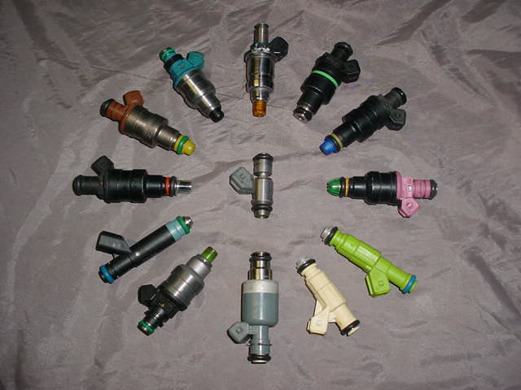

| Ultra-sonic cleaning of injectors. | Flow testing of injectors on the New Age machine. |
 |
|  |
Over time, fuel injectors develop a build-up of varnish and carbon. Periodic
professional cleaning of the injectors will help to maintain engine performance and maximize fuel mileage.
Ready to ship your injectors for servicing?
|
CHARGES:
NOTE: Injectors are delicate pieces of equipment. They can be damaged by improper removal and/or installation techniques. Be sure to follow your particular manufacturer's installation guidelines when removing or installing your injectors.
For more information, e-mail rich@cruzinperformance.com or call (231) 796-5705.
| Ultra-sonic cleaning of injectors. | Flow testing of injectors on the New Age machine. |
|
Click here to return to the Cruzin Performance homepage.